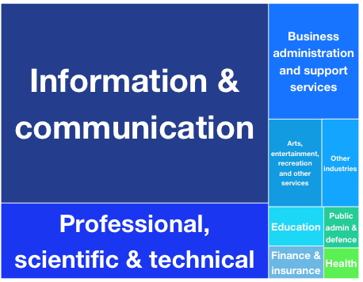

Summary: UK innovation across sectors and regions
Pioneering, diverse companies are using open data to create innovative products and services that fill gaps in markets, generate income and bring wide social, environmental and economic benefits.
We have identified and analysed 270 companies that use, produce or invest in open data as part of their business, through desk research, surveys and interviews about their experiences. The open data companies we studied have an annual turnover of over £92bn, and over 500k employees between them. This shows the scale of open data’s potential value in business.
You can explore the different sections in full with the links to the right of this summary.
<img src="uploads/assets/3a/69/553a6913f362be096b000066/yellow_break.svg">
</div>
<div>
<h3>What is open data?</h3>
Open data is data that anyone can access, use and share. For data to be considered ‘open’, it must be published in an accessible format, with a licence that permits anyone to access, use and share it.
<blockquote>
<i>Open data goes at the heart of what many businesses are and what they do.</i>
</blockquote>
<i class="pull-right"><small>Sir Nigel Shadbolt, ODI Co-founder</small></i>
<br />
<img src="uploads/assets/3a/69/553a6913f362be096b000066/yellow_break.svg">
<br />
</div>
<div>
<h3>What is an open data company?</h3>
We define an open data company as one that uses, produces, or otherwise invests in open data as a key aspect of its work. It could be a data publisher, making data open for others to use. It could be a user, creating services with data made available by other platforms. Or it could be an enabler, training or advising others in how to work with open data.
<img src="uploads/assets/3a/69/553a6913f362be096b000066/yellow_break.svg">
<br />
</div>
<div>
<h3>A snapshot of UK open data companies</h3>
Companies of all shapes and sizes are using open data as part of their work, across the UK.
<img src="uploads/assets/3a/6f/553a6ffff362be096b00006e/uk_companies.png">
Map showing the location of 270 UK open data companies (credits)
Almost half (49%) of the companies we studied are based outside London. Those within London are spread across the city (not just ‘Tech City’ / Shoreditch). We also found that open data companies vary in age, size and the sectors they work in.
The use of open data is not only the domain of startups and young companies. In fact, more than a third (39%) of open data companies we discovered are over 10 years old, based on their incorporation dates.
Most surveyed companies (70%) can be defined as ‘micro’ enterprises – with fewer than 10 employees. However, larger enterprises are also well-represented, with 8% of those we surveyed being from large companies or enterprises with 251 or more employees.
Many open data companies (54%) we surveyed work in the information and communication sector, but the remainder work across 12 other industries, from research to agriculture.

Treemap showing the primary sector of UK open data companies
<img src="uploads/assets/3a/69/553a6913f362be096b000066/yellow_break.svg">
<br />
</div>
<div>
<h3>Innovation strategies</h3>
Companies are using open data to exploit gaps across markets and identify business opportunities, create new products and services and develop new business models. Many also publish open data themselves, which helps increase the data supply and engage more customers.
<strong>Finding a market niche</strong>
The startup community are critical disruptors, challengers and innovators in open data, as with all industries. They are a primary community applying open data in new products and services, exposing diverse business opportunities in open data but also the challenges faced when working with a new resource.
<strong>Bringing social, environmental and economic value</strong>
Open data startups often combine business innovation with the intention to create social, economic and environmental impact. For example, FoodTrade uses open data to develop an allergen compliance tool, but also aspires to make food supply chains more sustainable.
<blockquote>FoodTrade wants to be the Wiki of the food system. We want to make market intelligence open to people so that they could then help themselves and start trading with each other. Our goal, from the start, was to make the food system sustainable and responsible.</blockquote>
<i class="pull-right"><small>Ed Dowding, CEO and Founder of FoodTrade</small></i>
<br />
<h3>Diversifying product portfolios</h3>
Many micro-, small- and medium-sized enterprises (SMEs) are building on the open data movement by helping others exploit it for their business needs, from education to retail. They do this by developing data products to sell alongside consultancy services, or becoming experts in handling specific open datasets and building consultancy services around them.
GeoLytix offers location consultancy services to big retailers, banks and property developers using open data.
<div>
<blockquote>We started to create open data products in order to provide better quality data analytics to our customers, especially smaller companies that didn’t have the capacity to build these datasets on their own. As a small for-profit company, open data products allow us to build a reputation in our sector and expand our customer base, but also contribute back to the ecosystem and help improve the quality of open data.</blockquote>
<i class="pull-right"><small>Sarah Hitchcock, Partner at GeoLytix</small></i>
<br />
</div>
Shoothill specialises in online mapping and data visualisation solutions. It started developing open data products when commissioned to integrate flood risk data from the Environment Agency in web-based street maps.
<div>
<blockquote>A lot of people have seen our flood maps now. People are engaging with us to build systems that use either part or some of this data or mix it with other datasets, to come up with something useful. This has become quite a big part of our business.</blockquote>
<i class="pull-right"><small>Rod Plummer, Managing Director at Shoothill</small></i>
<br />
</div>
<img src="uploads/assets/3a/69/553a6913f362be096b000066/yellow_break.svg">
<br />
</div>
<div>
<h3>Open data most valuable for companies</h3>
Open data companies use a wide range of open data from government and non-government sources.
<strong>Government data</strong>
Most (70%) of the companies we surveyed use open data provided by government. The UK is ranked 1st of 86 countries by the Open Data Barometer, with data.gov.uk containing nearly 15,000 datasets published with an Open Government Licence. Government data sources used by companies we surveyed included Companies House, Transport for London, Environment Agency, Met Office and the National Health Service.
<strong>Non-government data</strong>
Almost half (49%) of the surveyed companies use open data from non-government sources. This includes data generated by businesses such as OpenCorporates, not-for-profit associations such as p-lei.org, and a large number of community projects such as DBpedia, DMOZ, Geonames and Wikimapia. This reflects the existence of a sharing economy, with companies frequently using data created by each other.
Types of data used by companies
Geospatial data is the type of open data most commonly used among the by UK open data companies we surveyed (57%). The most frequently cited government data provider was Ordnance Survey. The non-government source most commonly used was OpenStreetMap, an openly licensed map of the world created by volunteers.
Transport data is also very popular with the companies we surveyed (43%). This includes government data provided by Department for Transport, from Highways Agency live traffic to C02 emissions, and non-government transport data from Traveline and the Association of Train Operating Companies (ATOC).
Environmental data is often used by the surveyed open data companies (42%). Frequently cited government providers include the Environment Agency and the Met Office.
Demographic data is valuable for companies, especially census, postcode and claimant count data with the Office for National Statistics (ONS) used by 18% of companies we surveyed.
<img src="uploads/assets/3a/69/553a69adf362be096b000068/data_types.png">
<i><small>Bar chart showing the types of data used by UK open data companies</small></i>
<img src="uploads/assets/3a/69/553a6913f362be096b000066/yellow_break.svg">
<br />
</div>
<div>
<h3>What holds open data companies back?</h3>
Companies face several challenges when using open data. Data is not always accurate, up-to-date or accessible in machine-readable formats. Its licensing does not always allow for commercial use and it often cannot easily be traced back to where it came from.
<strong>Open data can be improved to create more value</strong>
Companies specifically want more government open data, and for it to be published more consistently. However, they are generally more concerned with a lack of open data than with inconsistencies in data that exists.
<div>
<blockquote>I don’t mind inconsistency in the publishing [of the open data]. What is really problematic is not publishing at all. For example, nearly half of the NHS doesn’t have to publish spend statements because they're supposed to be independent of central control. Localism shouldn't be used as an excuse to create a democratic deficit.</blockquote>
<i class="pull-right"><small>Ian Makgill, Founder of Spend Network</small></i>
</div>
</div>
<div>
<img src="uploads/assets/3a/69/553a6913f362be096b000066/yellow_break.svg">
<br />
<h3>What’s next: open data business in focus</h3>
This study is the first in a series of outputs we will produce as part of a sector theme focus on business and open data. In future research we will further investigate the financial scale and impact of the open data economy in the UK. If you have insights you would like to share or ideas for research partnerships, contact us, or tweet your ideas to @ODIHQ with #opendatabiz.
You can find more open data business innovations by exploring the work of our diverse network of ODI Startups, ODI Nodes and ODI Member companies.
If you are a company interested in reaping the benefits of open data and connecting with your peers, find out more about becoming an ODI Startup or ODI Node, and join the growing network of ODI Members.
How to cite
Please cite this report as: Open Data Institute (2015) Open data means business: UK innovation across sectors and regions. London, UK. Available at open-data-means-business-uk-innovation-sectors-regions